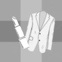

Konstrukcja
Antropometria
Modelowanie form odzieży

Kreowanie wizerunku
Kreowanie wizerunku
Materiałoznactwo
Surowce włókiennicze
Wyroby włókiennicze i dodatki krawieckie
Konserwacja wyrobów włókienniczych
Projektowanie
Rodzaje rysunków
Figury nietypowe
Moda w historii
Style
Stylizowanie sylwetki
Stylizowanie sylwetki
Szycie
Szycie ręczne i maszynowe
Prasowanie i obróbka klejowa
Elementy wykańczające i ozdobne
Odzież i jej elementy